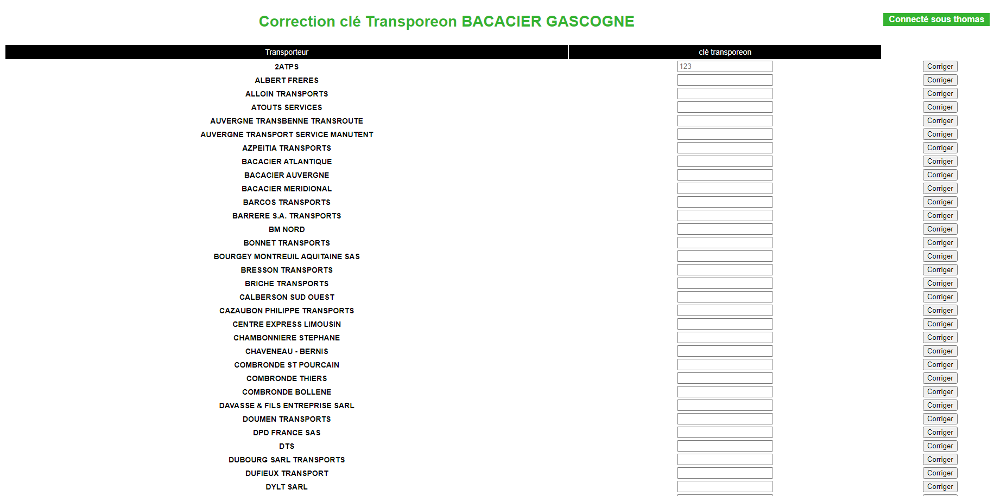
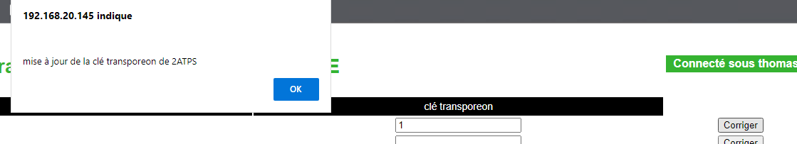

Mission 1er stage : Modification clé transporteur
Contexte :
J'ai réalisé cette mission seul. J'ai travaillé sur l'intranet de l'entreprise.
L'entreprise recense donc leurs transporteurs et travaille en parallèle sur une autre plateforme. Pour que les données puissent travailler sur 2 plateformes, des clés de transporteurs existent.
Environnement technologique :
- visual studio code
- microsoft sql server
- bureau à distance (environnement de développement)
- PHP
- mysql
- HTML / CSS
compétence mobilisée :
- B1.2.3 : Traiter des demandes concernant les applications
Il y avait parfois des problèmes avec certaine clé avec le site transporeon(un des sites de leur sous-traitant), et je devais pouvoir faire modifier la clé assez facilement à l'aide d'un tableau récapitulatif et rajouter un système de log pour pouvoir voir qui à fait tel modification en cas d'erreur.
Pour cela j'ai dû récupérer et renvoyer des données de la base de donnée, j'ai dû recréer une nouvelle table afin d'enregistrer les logs.

